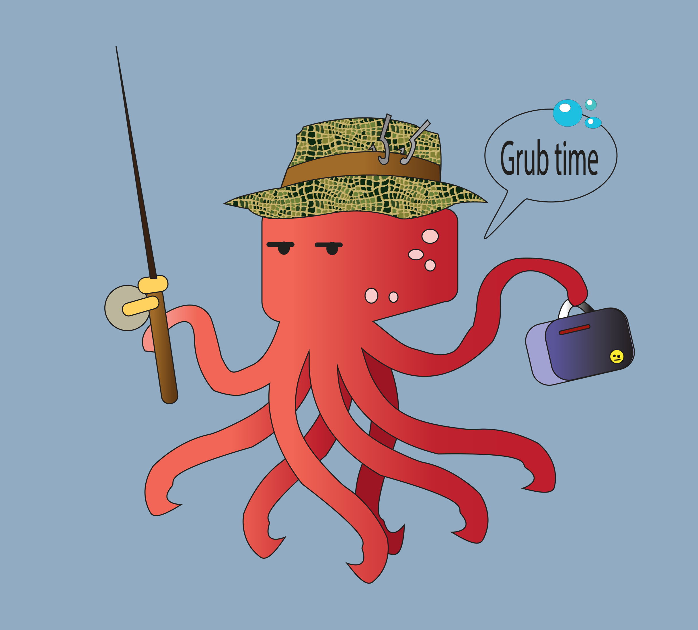

Home | Raster | Vector | Time Based Media | Print Layout | Contact
My favorite character from Finding Dori is the octopus. They are deliscous. They are also funny when they're grumpy. Based off of the Fisherman from the Raster Project, I made the octopus a fisherman too. Illustrator was a little hard but I managed.